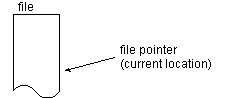

Feedback Form
|
|
Start of Tutorial > Start of Trail > Start of Lesson |
Search
Feedback Form |
TheRandomAccessFileclass implements both theDataInputandDataOutputinterfaces and therefore can be used for both reading and writing.RandomAccessFileis similar toFileInputStreamandFileOutputStreamin that you specify a file on the native file system to open when you create it. You can do this with a filename or a Fileobject. When you create a
RandomAccessFile, you must indicate whether you will be just reading the file or also writing to it. (You have to be able to read a file in order to write it.) The following line of Java code creates aRandomAccessFileto read the file namedfarrago.txt:And this one opens the same file for both reading and writing:new RandomAccessFile("farrago.txt", "r");After the file has been opened, you can use the commonnew RandomAccessFile("farrago.txt", "rw");readXXXorwriteXXXmethods to perform I/O on the file.
RandomAccessFilesupports the notion of a file pointer. The file pointer indicates the current location in the file. When the file is first created, the file pointer is 0, indicating the beginning of the file. Calls to thereadXXXandwriteXXXmethods adjust the file pointer by the number of bytes read or written. In addition to the normal file I/O methods that implicitly move the file pointer when the operation occurs,RandomAccessFilecontains three methods for explicitly manipulating the file pointer.
skipBytes- Moves the file pointer forward the specified number of bytes.
seek- Positions the file pointer just before the specified byte.
getFilePointer- Returns the current byte location of the file pointer.
|
|
Start of Tutorial > Start of Trail > Start of Lesson |
Search
Feedback Form |